Verknüpfungen in Arbeitsblattzellen einfügen
InsLink-to-WksCell
Diese Dingen gelten für alle Zellenverknüpfungen:
Bearbeiten einer Verknüpfung:
- Drücken Sie die Maustaste länger als 1 s gedrückt und lassen Sie sie dann los.
- Alternativ halten Sie die ALT-Taste gedrückt und klicken doppelt auf den verknüpften Text.
- Alternativ wählen Sie Bearbeiten: Editiermodus, um die verknüpfte Zelle zu bearbeiten.
- Sie können Text in Zellen mit Hyperlink formatieren und ausrichten. Dies wird in den Bereichen Beschriftungszeilen und Datenzeilen des Arbeitsblatts unterstützt.
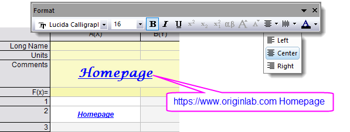
 |
Verwenden einer Substitutionsnotation in einer Verknüpfung:
Die meisten Verknüpfungen unterstützen einen optionalen angezeigten Text, der sich eindeutig aus dem tatsächlichen Verknüpfungsanteil der Zeichenkette ergibt. Die Substitutionsnotation wird im Teil des angezeigten Texts einer Verknüpfung unterstützt. Wenn Sie zum Beispiel die Zeichenkettenvariable str$=Homepage deklarieren, dann zeigt http://www.originlab.com %(str$) den per Hyperlink verknüpften Text Homepage in der Zelle an.
Verknüpfte Zellen mit Hintergrundfarbe anzeigen
Um verknüpfte Zellen auf den ersten Blick zu unterscheiden, einschließlich Zellen, die mit anderen Zellen im Projekt verknüpft sind, verschiedene Arten von LabTalk-Links, die mit "var://" und "str://“ beginnen, wählen Sie Ansicht: Formel/Verknüpfte Zellen hervorheben, so dass die verknüpften Zellen mit einer anderen Hintergeundfarbe markiert werden.
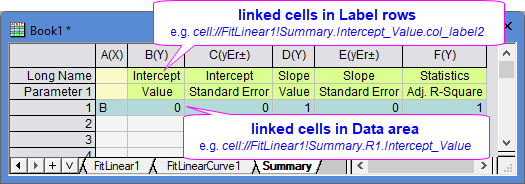
|
Links für URLs einfügen
Um aktive Links in Arbeitsblattzellen einzufügen, beginnen Sie URLs mit http:// oder https://. Der Link wird aktiv, wenn Sie die Bearbeitung beendet haben, und öffnet sich in einem Webbrowser, sobald er angeklickt wird.
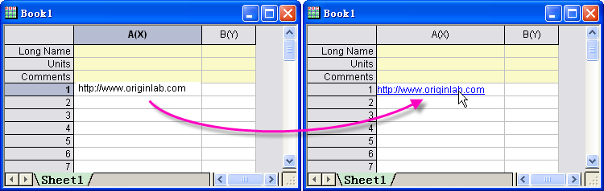
Um einen Link mit einem anderen Anzeigetext als der URL einzufügen, verwenden Sie folgende Syntax. Achten Sie darauf, ein Leerzeichen zwischen der URL und dem angezeigten Text einzufügen:
URL DisplayedText
Wenn Sie zum Beispiel http://www.originlab.com hier eingeben, wird das Wort "hier" in der Zelle angezeigt. Sobald es angeklickt wird, öffnet sich ein Webbrowser auf der OriginLab-Webseite.
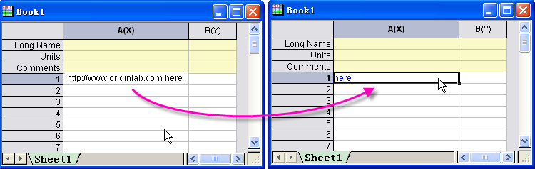
Links für Bereiche einfügen
Um interne Links in Bereiche einzufügen, wird mit range:// begonnen, gefolgt von den Information zu Mappe, Blatt und Spalte, wobei die Syntax folgender Beispiele verwendet wird:
-
- range://[book1]sheet2
- Dies aktiviert Sheet2 in Book1.
-
- range://[book1]sheet2!col(2)[10]
- Dies aktiviert Sheet 2 in Book 1; die zehnte Zeile der zweiten Spalte wird oben im Arbeitsblatt angezeigt.
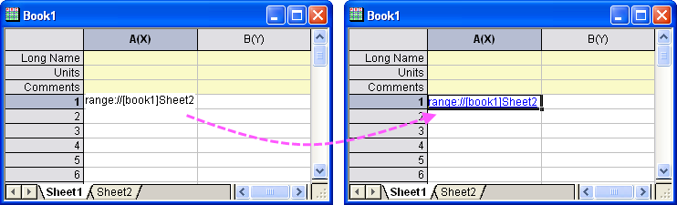
Um Text anzuzeigen, der sich von dem eigentlichen Link unterscheidet, verwenden Sie diese Syntax:
-
InternalLink DisplayedText
Beachten Sie den weißen Raum zwischen dem internen Link und dem angezeigten Text.
Wenn Sie zum Beispiel range://[book1]sheet2 Go to Book1 Sheet2 eingeben, wird Go to Book1 Sheet2 in der Zelle angezeigt. Wenn Sie klicken, wird Sheet2 von Book1 aktiviert.
Oder verwenden Sie eine Substitutionsnotation, um den 1. Blattnamen in der aktiven Mappe als angezeigten Text zu zeigen.
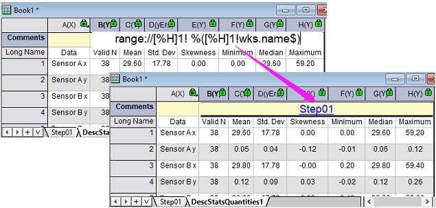
Weitere Informationen zu Bereich und Substitution finden Sie unter diesen Themen:
Links zum Zeigen des Inhalts einer anderen Zelle einfügen
Zeigen Sie den Inhalt einer anderen Zelle mit cell://[BookName]SheetName/SheetIndex!ColumnName/Col(Name)[rowindex]
Der folgenden Link zeigt den Inhalt A[1] auf Sheet1 in Book1.
-
- cell://[book1]sheet1!col(A)[1]
- cell://[book1]sheet1!A[1]
- cell://[book1]1!col(A)[1]
- cell://[book1]1!A[1]
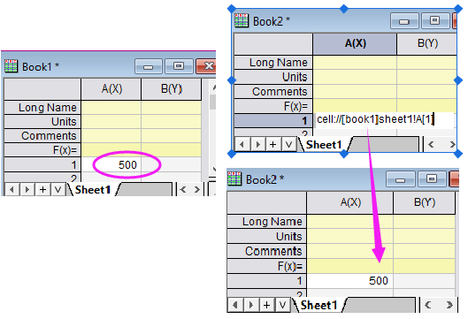
Hinweis:
- Wenn Sie sheetindex verwenden, wird dieser automatisch in den Blattnamen umgewandelt, wenn Sie Enter drücken. Wenn Sie z. B. cell://[book1]1!A[1] eingeben und später doppelt darauf klicken, wird cell://[book1]Sheet1!A[1] gezeigt.
- Wenn sich die Zelle im gleichen Blatt oder in einem anderen Blatt der gleichen Mappe befindet, können die Teile samebook und samesheet ausgelassen werden. Zum Beispiel: cell://col(A)[1] oder cell://A[1] oder cell://sheet2!A[1]
|
Origin 2018 SR0 und höher unterstützen eine vereinfachte Notation zum Anzeigen des numerischen Inhalts von anderen Zellen das Durchführen von Berechnungen auf Zellenebene. Weiteres erfahren Sie unter Mit einer Formel die Zellenwerte festlegen.
|
Links zu Hilfedokumenten einfügen
Um Links in ein Hilfedokument von Origin einzufügen, beginnen Sie Ihre Eingabe mit help:// und fügen Sie dann den Link zu der betreffenden Hilfeseite ein. Zum Beispiel:
-
Help://TUTORIAL.CHM/Tutorial/Import_Wizard.html
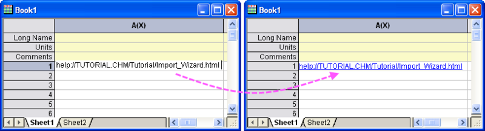
Der Link wird aktiv, wenn Sie die Bearbeitung beendet haben, und öffnet sich in einem Webbrowser, sobald er angeklickt wird.
Um den Link mit einem anderem Text als den der URL einzufügen, verwenden Sie die folgende Syntax:
-
HelpLink DisplayedText
Beachten Sie den weißen Raum zwischen dem Hilfe-Link und dem angezeigten Text.
Wenn Sie zum Beispiel help://TUTORIAL.CHM/Tutorial/Import_Wizard.html hier eingeben, wird das Wort "hier" in der Zelle angezeigt. Wenn Sie darauf klicken, wird ein Webbrowser geöffnet, der die Seite Importassistent in der Origin-Hilfe anzeigt:
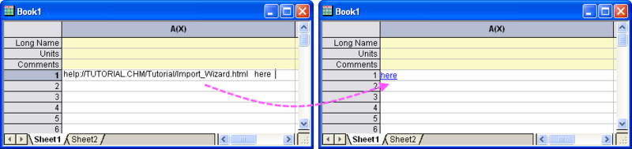
Links zu LabTalk-Variablen einfügen
Um einen Link zu einer LabTalk-Variablen einzufügen, verwenden Sie die folgende Syntax:
var://VariableName
Der angezeigte Wert ändert sich, wenn sich der Wert der Variablen ändert.
Beispiel: Für numerische Variable MyVar mit Wert 3.14. Geben Sie var://MyVar ein, um 3.14 in der Arbeitsblattzelle zu zeigen. Geben Sie var://$(aa,.1) ein, um 3.1 zu zeigen (nur 1 Dezimalstelle). Siehe hier weitere numerische Anzeigeformate.
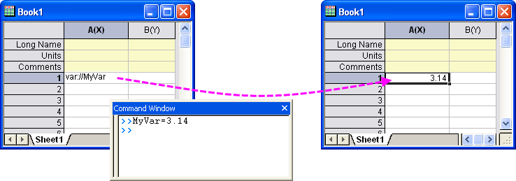
Beispiel: Für Zeichenkettenvariable MyBook$ mit dem Wert Book7. Geben Sie var://MyBook$ in einer Arbeitsblattzelle ein, und Book7 wird gezeigt.
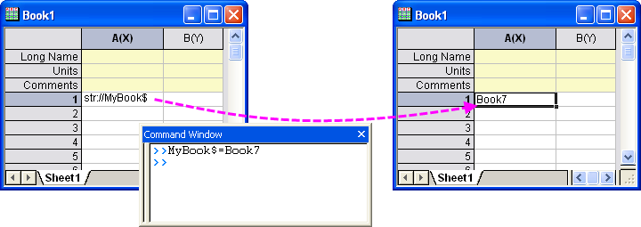
Für eine Objekteigenschaft in einem anderen Fenster fügen Sie einen Fensternamen und Layer oder einen Blattnamen vor der Eigenschaft hinzu. Sowohl Lang- als auch Kurzname werden unterstützt.
Beispiel: Der X-Wert des vertikalen Linienobjekts im 1. Layer von Graph1. Geben Sie var://[graph1]1!vline.x or var://["KZ LL"]1!vline.x ein. 74556.3 wird gezeigt.
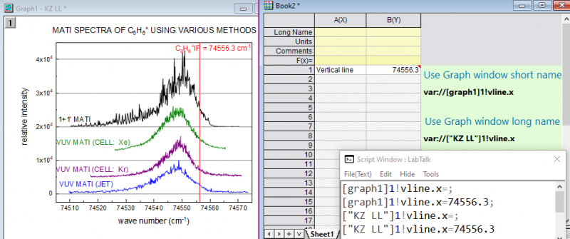
Hinweis:
- Um das Anzeigeformat benutzerdefiniert anzupassen, klicken Sie mit der rechten Maustaste auf die Zelle und wählen Sie Zelle formatieren, um z. B. die Dezimalstellen etc. festzulegen.
Oder geben Sie z. B. die Zellenformel =$([graph1]1!VLINE.X, .2) ein, um nur 2 Dezimalstellen zu zeigen.
- Seit Origin 2023 sucht Origin Fenster im gleichen Ordner, um diese zuerst zu nutzen, wenn Fensterlangnamen in der Notation verwendet werden. Dies ist hilfreich, wenn Anwender solche Ordner duplizieren oder sie als OPJU speichern und später laden, da der Kurzname im Origin-Fenster einmalig sein muss. Wenn Sie so einen Ordner duplizieren oder das Projekt an ein anderes anhängen, wird der Fensterkurzname auf jeden Fall geändert, falls es bereits ein Fenster mit diesem Kurznamen gibt.
Links zu LabTalk-Zeichenketten einfügen
Um eine Zeichenkettenvariable einzufügen, verwenden Sie die folgende Syntax:
str://StringVariableName$
Beispiel: var://MyBook$ im obigen Abschnitt kann auch str://MyBook$ geschrieben werden.
Ein anderes Beispiel: str://[%H]1!wks.name$ zeigt den 1. Blattnamen in der aktuellen Mappe, z. B. "Step01", wobei %H sich auf die aktuelle Mappe 1! bezieht. bedeutet das 1. Blatt. Ändern Sie es in str://Descriptive Statistics - %([%H]1!wks.name$), um Descriptive Statistics - Step01 zu zeigen
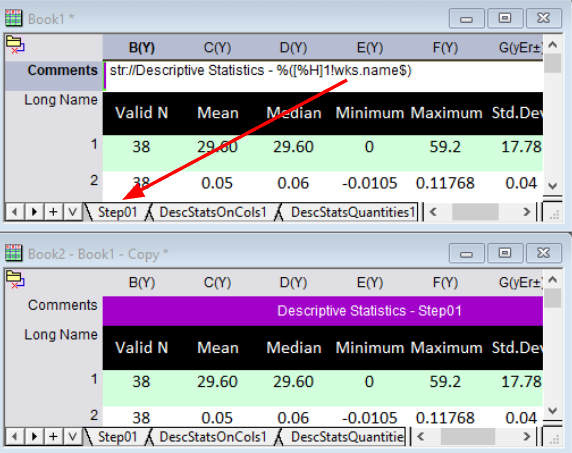
.
|
Hinweis: Diese Notationen, var:// und str://, funktioneren nur mit der alten Syntax "col(N)" -- nicht mit der neueren vereinfachten Notation, die mit Origin 2017 SR0 eingeführt wurde.
Beachten Sie, dass die ältere Notation Berechnungen auf Zellenebene unterstützt, die var:// verwenden, wie in:
var://max(col(A))*2 //find the max value in column A and multiply by 2
Es gibt jedoch eine neue und verbesserte Notation, um solche Berechnungen auf Zellenebene durchzuführen. Weitere Informationen finden Sie unter Mit einer Formel die Zellenwerte festlegen.
|
Links zu Diagramm-/Matrix-/Notizfenstern einfügen
Links zu Diagrammfenstern
Um einen Link manuell zu einem Diagrammfenster in eine Arbeitsblattzelle einzufügen, verwenden Sie die Syntax:
graph://GraphName
Dies fügt ein verknüpftes Bild des Diagramms in die Zelle ein. Ein Doppelklick auf die Zelle aktiviert das Diagrammfenster.
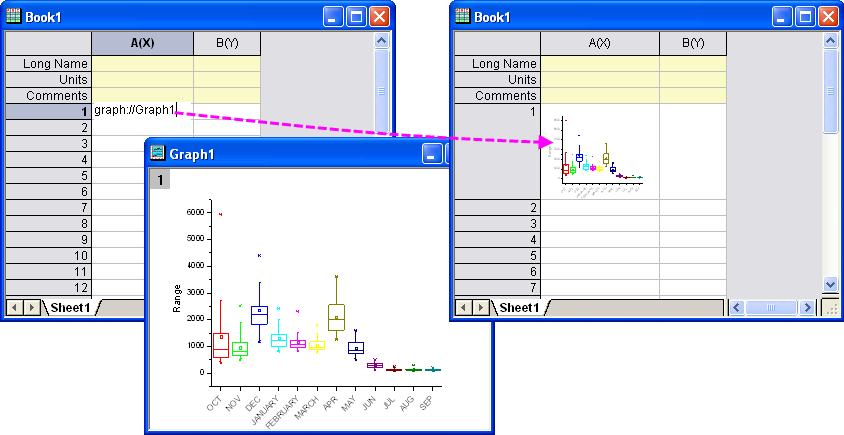
Eine einfachere Methode zum Verknüpfen mit einem Diagrammfenster besteht in einem Rechtsklick auf die Arbeitsblattzelle und der Auswahl Diagramm einfügen. Der Dialog insertGraph wird geöffnet. Erweitern Sie den Zweig Optionen und deaktivieren Sie Diagramm in eine Zelle verschieben [Einbetten]. Der Vorteil dieser Methode ist, dass Sie andere Optionen für die Anzeige des verknüpften Diagramms wählen können.
Links zu Matrixfenstern
Um einen Link zu einem Matrixfenster in eine Arbeitsblattzelle einzufügen, verwenden Sie die Syntax:
matrix://[MatrixBookName] // link to matrixbook
matrix://[MatrixBookName]MatrixSheetName! // link to matrixsheet
matrix://[MatrixBookName]MatrixSheetName!MatrixObjectNumber // link to matrix object
Wenn Sie beispielsweise ein Matrixobjekt in einem Matrixblatt einer Matrixmappe verknüpfen möchten, das den Namen [MBook1]MSheet1!1 hat, dann geben Sie matrix://[MBook1]MSheet1!1 in eine Arbeitsblattzelle ein. Diese Zelle zeigt dann den Bildmodus (wie ein Miniaturbild) dieses Matrixobjekts. Wenn Sie doppelt auf diese Zelle klicken, wird das Matrixobjekt aktiviert.
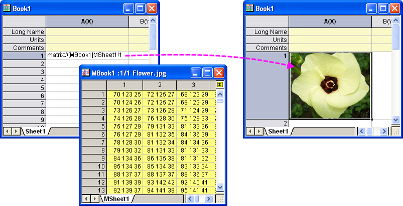
Links zu Notizfenstern
Um einen Link manuell zu einem bestehenden Notizfenster in eine Arbeitsblattzelle einzufügen, verwenden Sie die Syntax:
notes://NotesName
Für ein Notizfenster mit dem Namen Notes beispielweise geben Sie notes://Notes in eine Arbeitsblattzelle ein. In der Folge ist ein Link zu diesem Notizfenster verfügbar. Wenn Sie auf diesen Links klicken, wird das Notizfenster aktiv.
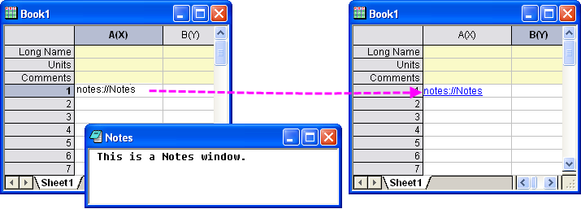
Um ein neues Notizfenster gleichzeitig zu erstellen und es zu verknüpfen, klicken Sie einfach mit der rechten Maustaste auf eine Arbeitsblattzelle und wählen Sie Notizen einfügen im Kontextmenü.
Um den Link mit einem anderem Text als den der URL einzufügen, verwenden Sie die folgende Syntax:
-
NoteLink DisplayedText
Links zu Bilddateien einfügen
Die folgende Syntax wird verwendet, um eine Bilddatei mit einer Arbeitsblattzelle zu verknüpfen. Das Bild wird in der Arbeitsblattzelle angezeigt.
file://ImagePath
Sie haben zum Beispiel ein Bild auf dem Laufwerk E:\, das den Namen Flower.jpg besitzt. Geben Sie file://E:\Flower.jpg in eine Arbeitsblattzelle ein. Das Bild wird dann dort gezeigt.
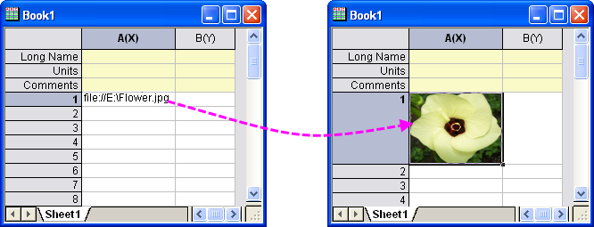
| Hinweis: Es gibt eine Alternative, um ein Bild in einer Arbeitsblattzelle mit einer externen Bilddatei zu verknüpfen. Sie wird hier unter Bild aus Datei erläutert. |
Pfad zu Datei einfügen
Verwenden Sie die folgende Syntax, um eine Verknüpfung zu einer externen Datei zu erstellen und die Datei zu öffnen, wenn der Link in der Zelle angeklickt wird:
path://FilePath DisplayedText
Beispiele:
path://"C:\Program Files\OriginLab\Origin2023\Samples\Import and Export\United States Energy (1980-2013).xls"
path://"C:\Program Files\OriginLab\Origin2023\Samples\Image Processing and Analysis\Car.bmp" "Show image of a Citroën 2CV"
Ausführbares LabTalk-Skript einfügen
Verwenden Sie die folgende Syntax, um das ausführbare LabTalk-Skript in eine Arbeitsblattzelle einzufügen:
labtalk://Script DisplayedText
Beispiele:
labtalk://";type -b Hello World!"
In diesem Beispiel haben wir dem Befehl type ein Semikolon (";") vorangestellt. Dies ist nur notwendig, wenn das Skript einen Dialog aufruft.
In einem anderen Beispiel verwenden wir das Kurzskript in der Zelle, um ein Arbeitsblattskript auszuführen:
- Drücken Sie bei aktiver Arbeitsmappe die Taste F4, um den Dialog Eigenschaften des Arbeitsblatts zu öffnen. Geben Sie auf der Registerkarte Skript Folgendes in das Bearbeitungsfeld ein und klicken Sie auf OK, um es zu schließen:
worksheet -a 3;
- Geben Sie Folgendes in einer leeren Arbeitsblattzelle ein und drücken Sie, wenn Sie fertig sind, Enter:
labtalk://"worksheet -r" "Add 3 worksheet columns"
- Klicken Sie auf den angezeigten Text, und es werden 3 Spalten zum Arbeitsblatt hinzugefügt.
Beachten Sie, auch wenn unser Beispiel nur eine einzelne Zeile Arbeitsblattskript ausgeführt hat, es genauso gut viel länger und komplexer sein kann.
Verwandte Themen